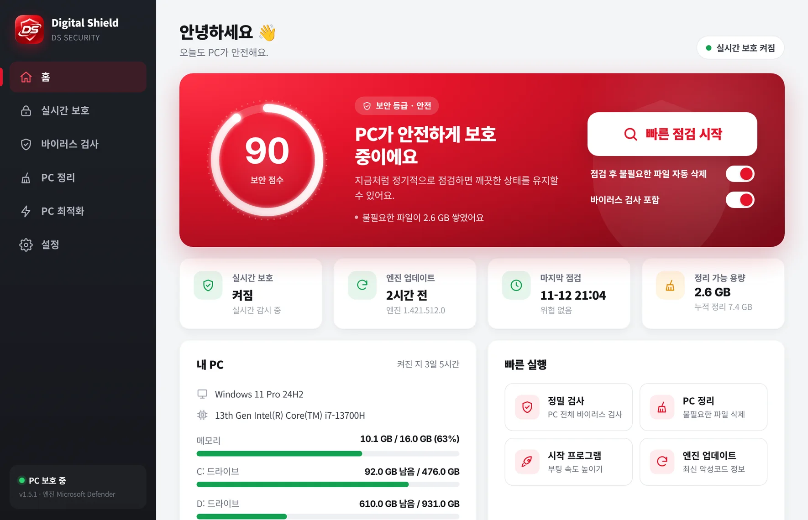

DS Digital Shield는 바이러스 검사, 실시간 보호 관리, 파밍 점검, 불필요한 파일 정리와 시작 프로그램 최적화를 버튼 하나로 해 주는 PC 보안 프로그램이에요.

복잡한 설정 없이, 첫 화면의 [빠른 점검] 버튼 하나로 시작하세요.
버튼 하나로 불필요한 파일, DS 자체 검사, 바이러스 검사, 정리까지 차례로 진행해요.
Windows에 내장된 Microsoft Defender의 보호 기능을 한 화면에서 켜고 꺼요.
DS가 직접 만든 규칙으로 악성코드가 자주 쓰는 수법을 찾아요.
쌓인 임시 파일과 브라우저 캐시를 지워 저장 공간을 늘려요. 로그인 정보는 그대로예요.
부팅 때 자동으로 켜지는 프로그램을 줄여 PC를 빠르게 해요.
신경 쓰지 않아도 알아서 지켜 줘요.
필요한 기능을 왼쪽 메뉴에서 바로 찾을 수 있어요.
홈 - 보안 점수와 빠른 점검
위의 [무료 다운로드] 버튼을 눌러 DigitalShield_Setup.exe를 받아요.
받은 파일을 실행하고 [설치]를 누르면 끝이에요. 바탕화면과 시작 메뉴에 아이콘이 생겨요.
프로그램이 열리면 [빠른 점검 시작]을 눌러 보세요. PC 상태를 한 번에 확인해요.
네. 모든 기능을 무료로 쓸 수 있고 광고도 없어요.
바이러스 검사는 Windows에 내장된 Microsoft Defender 엔진을 사용해요. 다른 백신 때문에 Defender가 꺼져 있으면 Microsoft의 공식 검사 도구(Microsoft Safety Scanner)를 자동으로 내려받아 검사해요. 여기에 DS가 직접 만든 규칙으로 파밍·악성 스크립트·수상한 자동 실행 같은 수법을 추가로 점검해요.
네. 다른 백신이 켜져 있으면 실시간 보호는 그 백신이 맡고, DS Digital Shield는 PC 정리·최적화와 추가 검사를 해요. 다만 다른 백신을 쓰는 동안에는 Defender 보호 기능을 이 프로그램에서 바꿀 수 없어요.
아니요. 검사·정리 결과는 내 PC 안에만 저장되고 어디로도 보내지 않아요. 바이러스 검사 중 Microsoft Defender가 Microsoft 클라우드 보호를 사용하는 것은 Windows 설정을 따라요.
아니요. 임시 파일(24시간 지난 것만), 브라우저 캐시, 오류 보고서처럼 지워도 되는 파일만 정리해요. 문서·사진 같은 개인 파일과 브라우저 로그인 정보는 건드리지 않아요. 휴지통 비우기는 직접 켜야만 동작해요.
새로 배포된 프로그램은 Windows가 아직 충분한 다운로드 기록을 확인하지 못해 "Windows의 PC 보호" 창을 띄워요. [추가 정보] → [실행]을 누르면 설치할 수 있어요.
Windows 설정 → 앱 → 설치된 앱에서 DS Digital Shield를 찾아 [제거]를 누르세요. 시작 메뉴의 "DS Digital Shield 제거"로도 지울 수 있어요.